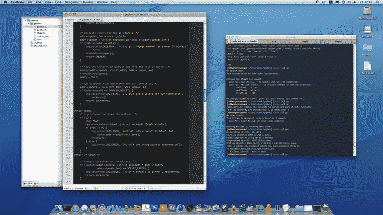

Old Computer Challenge 2024 - Day 3
Third actual day of the challenge has been marked by an enthusiasm to build a proper modern Gopher graphical client. After yesterday's quality time browsing the gopherspace I was very much motivated to write my own client and have a more "native" experience than just using a proxy or a browser plugin.
I've started the project on the venerable Power Mac G5, since it's hooked up to my dual monitor setup, perfect for programming. I want this to be a proper project, not just something thrown together, so I'm taking my time to properly implement things in a way that's maintainable and future proof. I sure don't want to be spelunking around this code base in the future.


Since I later want to port my client to as many platforms as I possibly can, I decided to write a portable, single header/source, Gopher implementation in plain C89. Very little was done so far, mostly because it's a lot of boilerplate code and I've been trying to grab as much as possible from another application I've worked on in the past and repurpose it here, although cleaning up the code does take a long time.
You can check out my ongoing progress in the project on GitHub. I run a local git server with cgit that I use for all local development, but the only public mirror of everything I do locally is GitHub, although I really want to change this in the future.